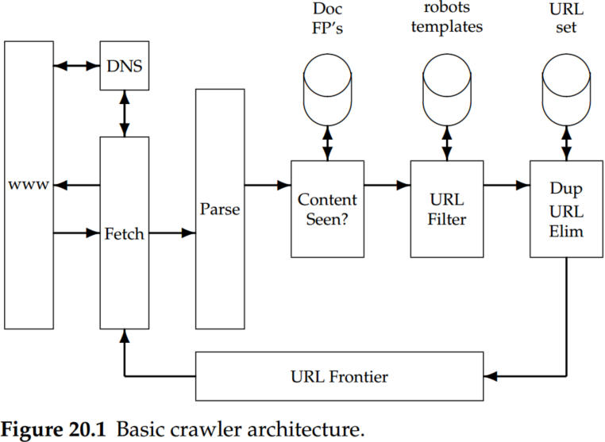
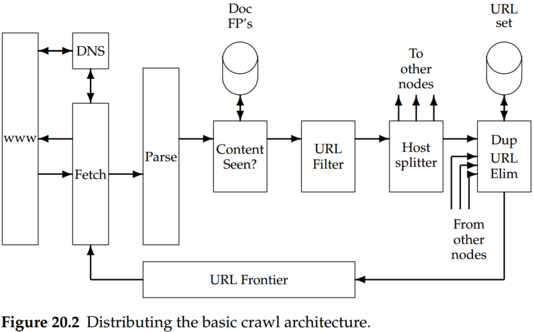

Chapter 20 Web crawling and indexes
The objective of crawling is to quickly and efficiently gather as many useful web pages as possible, together with the link structure that interconnects them.
Features a crawler must provide:
- Robustness: The Web contains servers that create spider traps, which are generators of web pages that mislead crawlers into getting stuck fetching an infinite number of pages in a particular domain. Crawlers must be designed to be resilient to such traps.
- Politeness: Web servers have both implicit and explicit policies regulating the rate at which a crawler can visit them. These politeness policies must be respected.
Features a crawler should provide:
- Distributed: The crawler should have the ability to execute in a distributed fashion across multiple machines.
- Scalable: The crawler architecture should permit scaling up the crawl rate by adding extra machines and bandwidth.
- Performance and efficiency: The crawling system should make efficient use of various system resources, including processor, storage, and network bandwidth.
- Quality: Given that a significant fraction of all web pages is of poor utility for serving user query needs, the crawler should be biased toward fetching “useful” pages first.
- Freshness: In many applications, the crawler should operate in continuous mode.
- Extensible: Crawlers should be designed to be extensible in many ways – to cope with new data formats, new fetch protocols, and so on.
The simple scheme outlined above for crawling demands several modules that fit together, as shown in Figure 20.1.

- The URL frontier containing URLs yet to be fetched in the current crawl.
- A DNS resolution module that determines the webserver from which to fetch the page specified by a URL.
- A fetch module that uses the HTTP protocol to retrieve the web page at a URL.
- A parsing module that extracts the text and set of links from a fetched web page.
- A duplicate elimination module that determines whether an extracted link is already in the URL frontier or has recently been fetched.

Following the URL filter, we use a host splitter to dispatch each surviving URL to the crawler node responsible for the URL; thus, the set of hosts being crawled is partitioned among the nodes.
Given a URL such as www.wikipedia.org in textual form, translating it to an IP address (in this case, 207.142.131.248) is a process known as DNS resolution or DNS lookup; here, DNS stands for domain name service.
DNS resolution is a well-known bottleneck in web crawling. Due to the distributed nature of the domain name service, DNS resolution may entail multiple requests and roundtrips across the Internet, requiring seconds and sometimes even longer. Right away, this puts in jeopardy our goal of fetching several hundred documents a second.
There is another important difficulty in DNS resolution; the lookup implementations in standard libraries (likely to be used by anyone developing a crawler) are generally synchronous. This means that once a request is made to the domain name service, other crawler threads at that node are blocked until the first request is completed.
The URL frontier at a node is given a URL by its crawl process (or by the host splitter of another crawl process).
Two important considerations govern the order in which URLs are returned by the frontier.
- First, high-quality pages that change frequently should be prioritized for frequent crawling. Thus, the priority of a page should be a function of both its change rate and its quality (using some reasonable quality estimate).
- The second consideration is politeness: We must avoid repeated fetch requests to a host within a short time span.
- As a reference point, fetching a billion pages (a small fraction of the static Web at present) in a month-long crawl requires fetching several hundred pages each second.
- DNS resolution is a well-known bottleneck in web crawling.
- A standard remedy is to introduce caching: URLs for which we have recently performed DNS lookups are likely to be found in the DNS cache, avoiding the need to go to the DNS servers on the Internet.
- The first web crawler appears to be Matthew Gray’s Wanderer, written in the spring of 1993.
- The designers of Mercator recommend a rough rule of three times as many back queues as crawler threads.